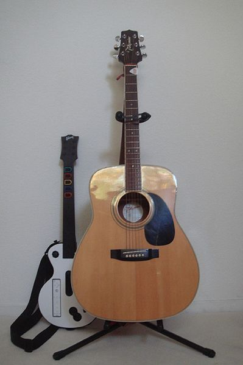
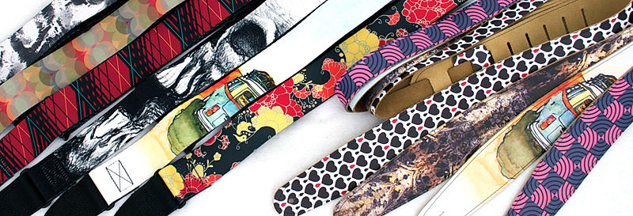
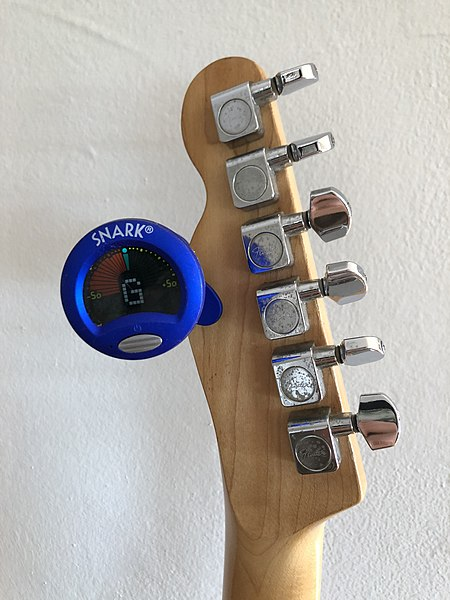
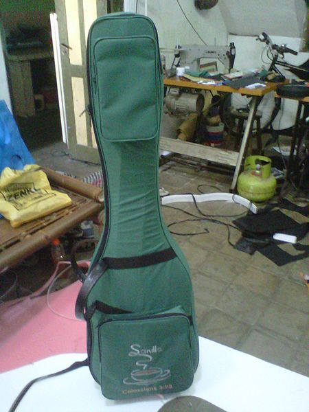
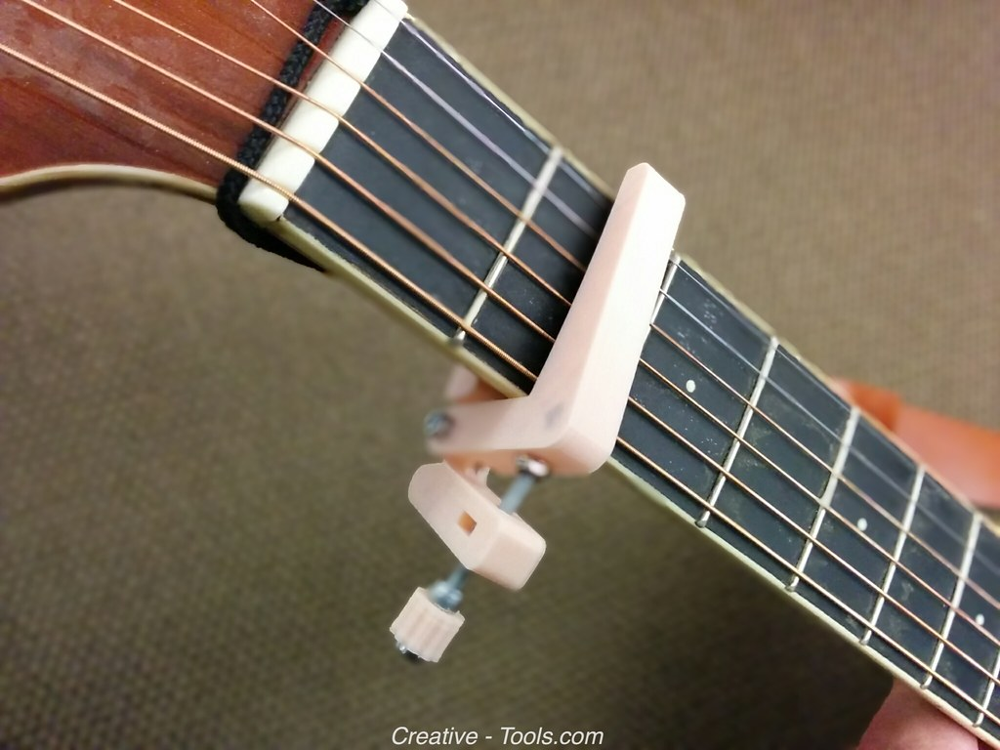

| Name | Image | Description | Link | Price |
|---|---|---|---|---|
| Guitar Stand |  |
A guitar stand allows you to put your guitar down when you aren't playing it, making it easily accessible |
Guitar Stand | $9.99 - $14.99 |
| Strap |  |
A guitar strap allows you to stand and play your guitar! Very useful for any time you might preform on stage! |
Ernie ball Poly Pro Strap | $6.99 |
| Tuner |  |
A guitar tuner makes it super easy to tune your guitar on the go! Just clip it to the end of your guitar and tune |
Super Snark 2 Clip-On Tuner | $14.99 - $29.99 |
| Gig bag |  |
A gig bag is a soft case to be able to carry around your guitar safely |
Road Runner Avenue II Electric Guitar Gig Bag | $59.99 |
| Capo |  |
A capo clips on to your guitar neck and allows you to play chords easier in different keys |
Axis Capo Black | $14.99 |